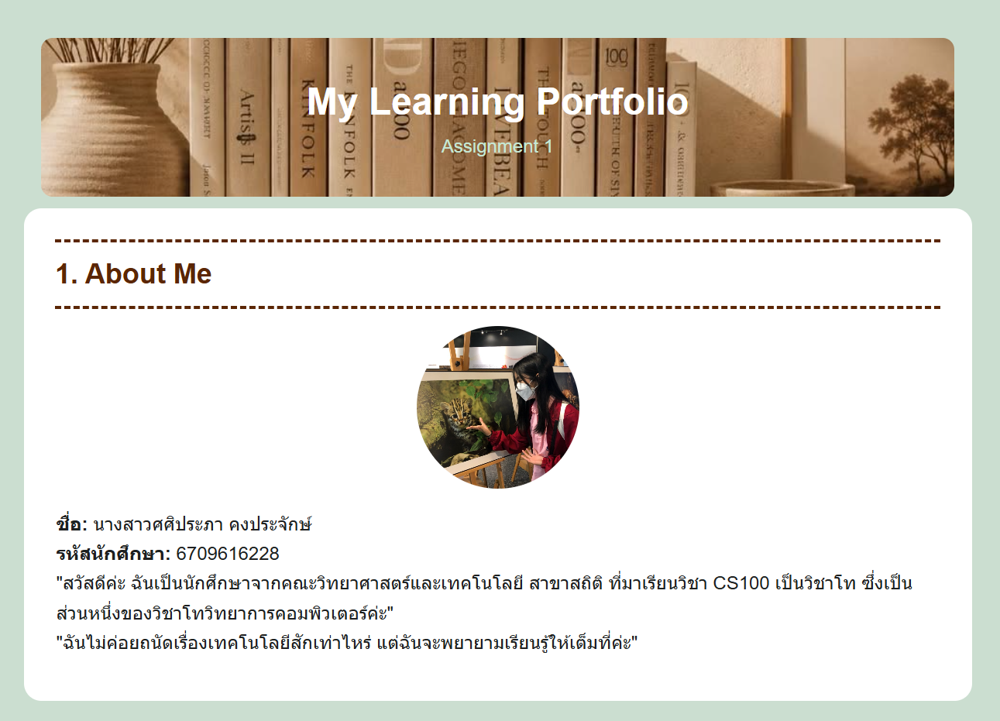
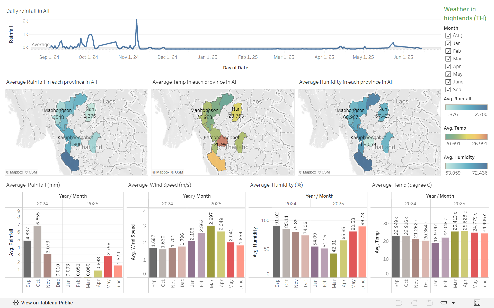

About Me

ศศิประภา คงประจักษ์
รหัสนักศึกษา: 6709616228
หลักสูตร: สถิติศาสตร์
ความสนใจ: กำลังเรียนรู้ภาษาจีน การวาดรูป และการเขียนเว็บ
Assignment 2
รหัสนักศึกษา: 6709616228
หลักสูตร: สถิติศาสตร์
ความสนใจ: กำลังเรียนรู้ภาษาจีน การวาดรูป และการเขียนเว็บ

Type: Course Assignment
Date: 29 Aug 2026
Role: Individual Developer
Description: พัฒนาเว็บไซต์เพื่อสะท้อนสิ่งที่ได้เรียนรู้ในรายวิชา CS100
Skills: HTML, CSS
Reflection: ในการทำงานนี้ฉันได้ลองพัฒนาเว็บไซต์ด้วยตัวเองครั้งแรก ได้ใช้ความรู้พื้นฐานของ HTML และ CSS ในการสร้างเว็บไซต์ ทำให้ฉันได้เข้าใจความแตกต่างของ Relative path กับ Absolute path มากขึ้น ได้รู้จัก CSS Properties มากขึ้น ปัญหาในตอนแรกของฉันคือไม่ค่อยเข้าใจในการเขียนหน้าเว็บแบบแยกไฟล์ HTML และ CSS อย่างชัดเจน (External CSS) เช่น การใช้ class และ id และไม่ค่อยมั่นใจว่าจะจัดแต่งหน้าเว็บอย่างไรดี แต่ หลังจากค้นหาข้อมูลเพิ่มเติมและได้ลองค่อย ๆ เขียน ค่อย ๆ รันดูผลลัพธ์ก็เข้าใจมากขึ้น หากได้พัฒนางานนี้ต่อฉันอยากจะตกแต่งหน้าเว็บให้สวยขึ้นด้วย Bootstrap

Type: Course Project
Date: 16 Nov 2025
Role: Tableau Developer, Statistical Modeler
Description: สร้างโมเดลการวิเคราะห์ปริมาณน้ำฝนรายวัน และทำ Visualizations รายวิชา ST221
Skills: Tableau, Statistics, Gretl, Data Analysis, Excel
Reflection: ในการทำงานนี้ฉันต้องเลือก Data มาเพื่อวิเคราะห์ข้อมูลและสร้าง Visualizations ซึ่งฉันได้เลือกชุดข้อมูลปริมาณน้ำฝนรายวันบนพื้นที่สูง จากสถาบันวิจัยและพัฒนาพื้นที่สูง ทำให้ฉันได้เรียนรู้การทำ Data Analysis จากโปรแกรม Tableau และ Gretl ปัญหาที่พบคือการทำ Data Cleaning เนื่องจากวันที่ฝนไม่ตกนั้นในชุดข้อมูลจะเป็นช่องว่าง (NULL) ทำให้ต้องใช้ Excel ช่วยเติมเลข 0 แทน NULL รวมถึงลบแถวไป 2-3 แถวที่ไม่มีข้อมูลในบางคอมลัมน์ หากได้พัฒนางานนี้ต่อฉันอยากพัฒนาโมเดลให้มีความแม่นยำมากขึ้น เนื่องจากในรายวิชานั้นมีขอบเขตการสอนเพียง Linear Regression ซึ่งอาจไม่เหมาะสมกับข้อมูลนี้ รวมถึงเขียนรายงานวิเคราะห์ข้อมูลที่ได้จาก Visualizations ให้น่าสนใจยิ่งขึ้น
Evidence: Tableau Dashboard